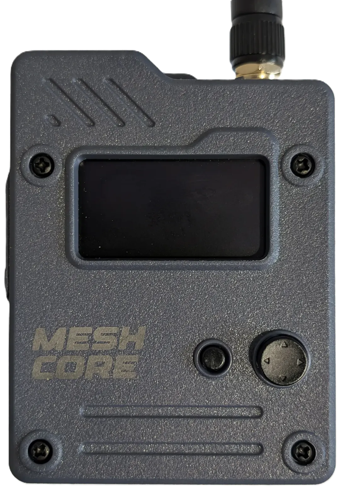

This browser has no Web Bluetooth. Use Chrome on Android (or Chrome/Edge on a computer).
Left from the list opens Settings, right opens Diagnostics.

Tap around the joystick to push it that way (or drag from its middle), tap the middle to press. Tapping the screen switches to the plain view. Left from the list opens Settings, right opens Diagnostics.
The tracker keeps listening while a file downloads.
Each meter at its estimated position; the circle is its spread (how far apart the receptions it's worked out from were); the blue lines are where you walked. Tap a meter for details. "Open files" takes survey.csv and track.csv (pick both) off the tracker's USB drive, no Bluetooth needed.
Litres per day between walks for one meter, from history.csv. Tap a bar for its numbers.